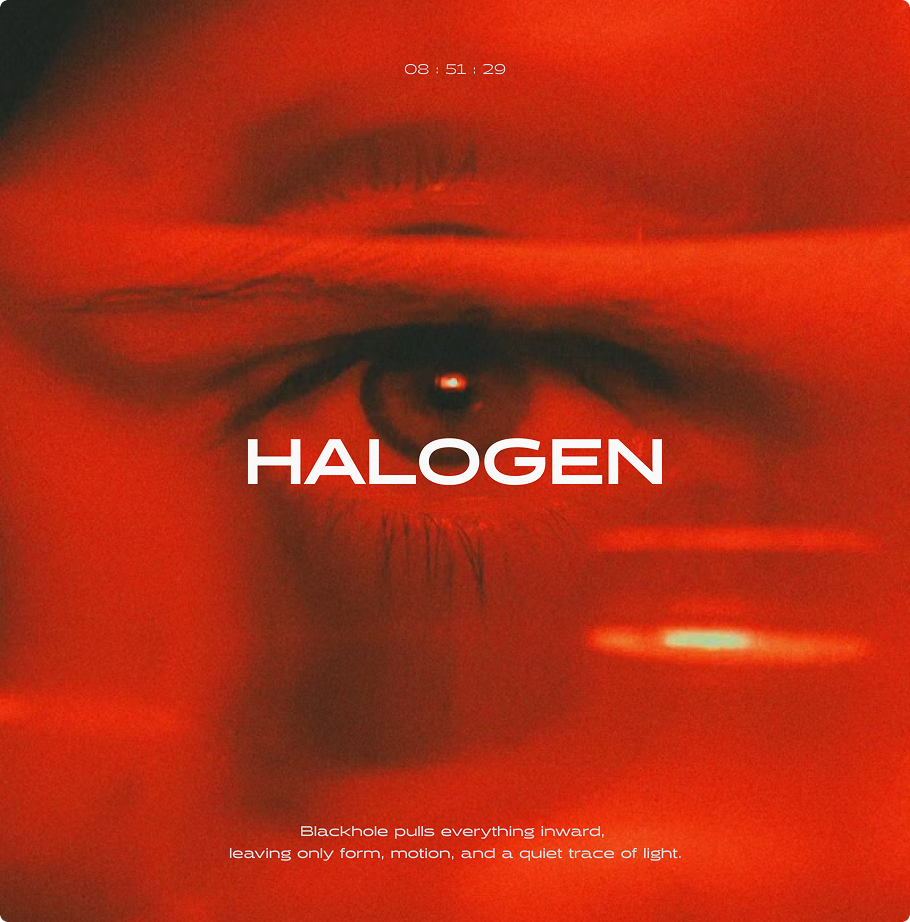
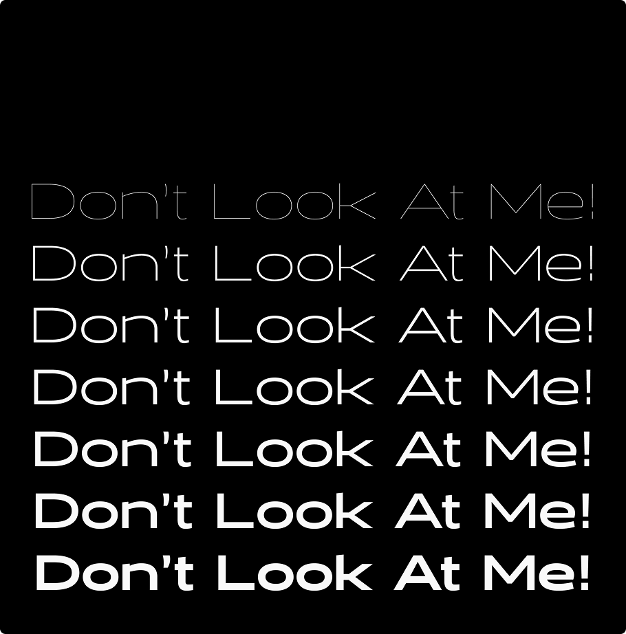
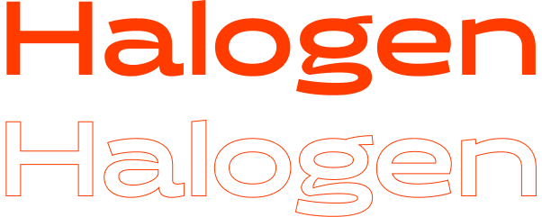

HALOGEN
Blackhole pulls
everything inward,
leaving only form,
motion, and a quiet
trace of light.



저는 산세리프체 중에서도 성격이 강한, 그 서체만의 개성이 뚜렷한 타입을 좋아합니다.
깔끔하고 미니멀한 산세리프체의 전형적인 조형미는 현대적인 무드를 만들기 쉬운 장점이 있지만,
동시에 무난하고 개성이 약한 디자인이 될 수 있다고 생각해요.
Halogen은 깔끔하지만 특유의 날카롭고 힙한 무드를 가지고 있어서
산세리프체 중에서 가장 좋아하는 서체입니다. 브랜딩이나 로고, 그리고 웹사이트의 랜딩페이지 등
강조가 필요한 부분에 활용하기 좋은 타입이에요.